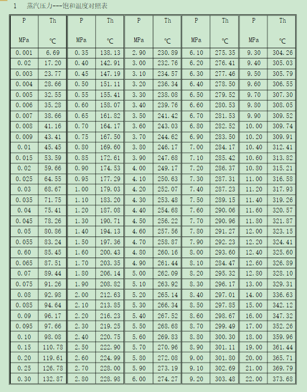

6.1. 饱和蒸气压与汽爆强度计算¶
6.1.1. 饱和蒸汽压与汽爆对应关系¶
6.1.3. 自动化计算¶
6.1.3.1. 压强与温度转换代码¶
压强与温度对应图示如下：
以下代码实现了压强和温度的转换
function t=P2T(P)
% 本函数实现了压强（MPa）向温度（℃）的转换
% P为压强（MPa），T为温度（℃）
% Writen by Xia Menglei, 2020-8-6，Version 1.0
P2=[0.001,0.002,0.003,0.004,0.005,0.006,0.007,0.008,0.009,0.01,0.015,0.02,0.025,0.03,0.035,0.04,0.045,0.05,0.055,0.06,0.065,0.07,0.075,0.08,0.085,0.09,0.095,0.1,0.15,0.2,0.25,0.3,0.35,0.4,0.45,0.5,0.55,0.6,0.65,0.7,0.75,0.8,0.85,0.9,0.95,1,1.1,1.2,1.3,1.4,1.5,1.6,1.7,1.8,1.9,2,2.1,2.2,2.3,2.4,2.5,2.6,2.7,2.8,2.9,3,3.1,3.2,3.3,3.4,3.5];
T2=[6.69,17.2,23.77,28.66,32.55,35.28,38.66,41.16,43.41,45.45,53.59,59.66,64.55,68.67,71.75,75.41,78.26,80.86,83.24,85.45,87.51,89.44,91.26,92.98,94.64,96.17,97.66,98.08,110.78,119.61,126.78,123.87,138.13,142.91,147.19,151.11,155.41,158.07,161.82,164.17,167.5,169.6,172.61,174.53,177.29,179.03,183.2,187.08,190.71,194.13,197.36,200.43,203.35,206.14,208.82,212.63,213.85,216.23,219.25,220.75,222.9,224.99,228,228.98,230.89,232.76,234.57,236.34,238.08,239.76,241.42];
[xData, yData] = prepareCurveData( P2, T2 );
% Set up fittype and options.
ft = fittype( 'power2' );
opts = fitoptions( 'Method', 'NonlinearLeastSquares' );
opts.Display = 'Off';
opts.StartPoint = [316.746688037843 0.583224347559676 -112.397392892281];
% Fit model to data.
[fitresult, ~] = fit( xData, yData, ft, opts );
t=feval(fitresult,P);
end
6.1.3.2. 汽爆强度计算代码¶
以下代码实现了汽爆强度的计算
function [R] = SES(T,t)
%计算气爆强度
%t代表维压时间/min,T代表温度/℃，R代表气爆强度
%杨帆/2020/8/6
R = t.*exp((T-100)./14.75)
end
两者联立，就可以计算出不同温度（压强）和持压时间的汽爆强度。